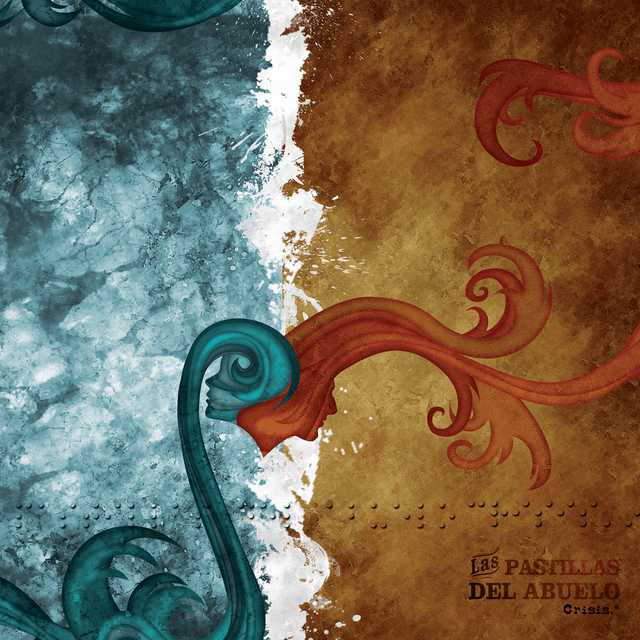
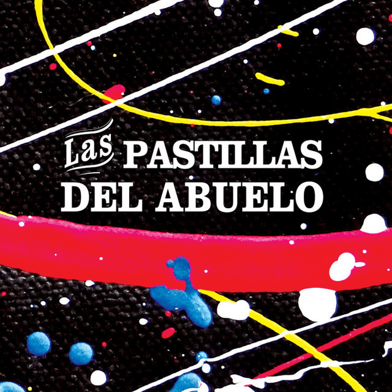

Discografía

Por Colectora - 2004
- José
- Solo Dios (Almafuerte)
- Peldaño
- Saber Cuando Parar
- Cubano
- Skalipso
- Cerveza
- Oscarcito
- Perdido (Chakarera)
- Lo + Fino
- La Casada
- Resulta imposible

Las Pastillas del Abuelo - 2005
- Oportunistas
- Tantas Escaleras
- Candombe de Resacas
- Enano
- Por Colectora
- Amar y Envejecer
- Otra Vuelta de Tuerca
- Viejo
- Osiris
- Desde la Postura
- Locura y Realidad
- Historias

Crisis - 2008
- De Donde Vengo?
- Hacia Donde Voy?
- Casualidad o Causalidad?
- Que Carajo Es el Amor
- Quiero Tener Razón o Ser Feliz?
- Que Vicios Tengo?
- Donde Esconder Tantas Manos?
- Cómo Pudo Entrar en Mi?
- Aprenderé a Conciencia Esta Lección?
- Qué Es Dios?
- Que Hago Yo Esperando un Puto As?
- Me Juego el Corazón?
- Duda
- Maldito y Cortamambo
Desafíos - 2011
- Cambios de Tiempo!
- Viejo Karma!
- Leer y Escribir!
- Lo Que No Se Ve!
- Fuerza, Locura y Libertad!
- Loco, No Discrimines!
- La Experiencia!
- Viles Medios!
- El Fondo de Tu Vida!
- Gobiernos Procaces!
- Ojos de Dragón!
- Diosa de la Transformación!
- Hasta acá nos ayudó Dios!

Paradojas -2015
- Absolutismos
- Rompecabezas de Amor
- Inercia
- Ansiedad
- La Creatividad
- Lo Que Tenga Que Ser
- Ella Dice
- Permiso y Prometo
- Milagroso Eslabón
- Gigantes
- Artesano
- Saber Hacer

2020 - 2020
- Interpretación
- Rocanrol N'n'n
- Azúcar Impalpable
- El Encanto del Flagelo
- Neblina
- Dos Ángeles
- El Favor
- Incontinencia Verbal
- Más Lejos
- Veinte